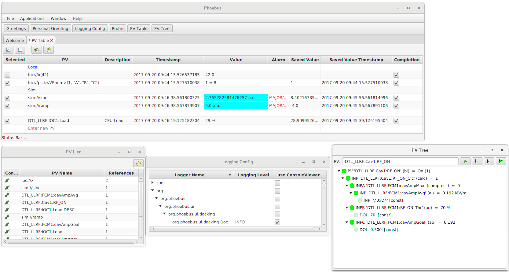

Introduction¶
Phoebus is an update of the Control System Studio toolset that removes dependencies on Eclipse RCP and SWT.
{kind=link}
While Eclipse RCP kick-started the original CS-Studio implementation and served CS-Studio well for about a decade, depending on RCP also added limitations to the control system user interface development.
Goals of the Phoebus project:
Retain functionality of key CS-Studio tools, specifically the Display Builder, Data Browser, PV Table, PV Tree, Alarm UI, Scan UI, .. supporting their original configuration files with 100% compatibility.
Provide full control of window placement free from RCP restrictions, for example allowing us to save/restore panel layouts.
Use Java FX as the graphics library to overcome limitations of SWT.
Prefer core Java functionality over external libraries whenever possible: Java FX as already mentioned, SPI for locating extensions, java.util for logging and preferences. In the future, we may also use the module mechanism introduced in Java 9 for bundling.
Reduce build system complexity, fetching external dependencies in one initial step, then supporting a fully standalone, reproducible build process, allowing multiple build methods instead of being restricted to one.
For more, see https://docs.google.com/document/d/11W52PRlsRjpIvP81HxUxxR9g180DHDByCohYQ9TQv7U